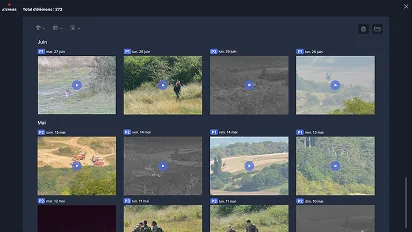
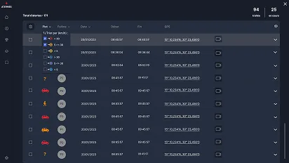
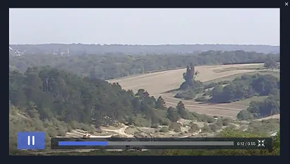

Conception d'un logiciel P3C (Poste de Contrôle Commande Centralisé) pour la supervision de pylônes de surveillance équipés de têtes optroniques, radar terrestre et calculateur bureautique.
Contexte
Conception d'un logiciel P3C de Poste de Contrôle Commande Centralisé avec plusieurs pylônes de surveillance qui se composent de têtes optroniques (caméra jour/IR), de radar terrestre et d'un calculateur de type bureautique avec 2 grands écrans.
En version finale, le logiciel gère localement l'ensemble des senseurs présents sur le pylône et est capable de faire fonctionner de manière autonome une surveillance automatique utilisant le radar et l'optronique.
Centraliser la supervision de plusieurs pylônes de surveillance équipés de capteurs hétérogènes (optronique, radar) sur une interface claire et exploitable en conditions opérationnelles.
Concevoir une interface répartie sur deux écrans : un dédié à la situation terrain (carte), l'autre à la visualisation vidéo et au journal d'alertes.
Opérateurs de surveillance · Agents de sécurité en poste de contrôle
Maquettes
La zone de travail du système ASOS-SFT ("Surveillance fixe terrestre") est capable de représenter de manière distincte les éléments suivants :
Le journal d'alertes recense les intrusions détectées sur le terrain en fonction des informations associées :



Cette vue permet d'avoir une vision d'ensemble de l'état et des vidéos actives des différents pylônes en fonction de leur état.
Elle s'adapte au nombre de pylônes définis dans le système du Poste Frontière. Le nombre de pylônes peut varier de 1 à 6.
Par défaut, cette vue affiche pour chaque pylône :
Cette vue permet, sans interagir avec les senseurs, de visualiser leur fonctionnement. Elle permet également d'ajuster les paramètres du Radar en balayage.
Wireframe
Le wireframe de l'interface pour deux écrans. Un écran dédié à la situation terrain avec un fond de carte, et un écran dédié à la visualisation des vidéos et images liées à la surveillance et un journal d'alertes.
Workshops